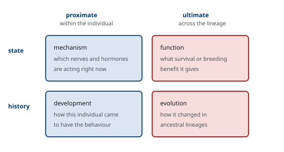
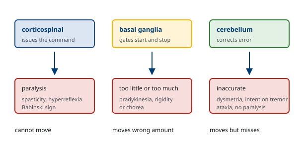

M01-W03-L02 · 인체일반생물학과 기초세포생물학
동물행동 요약: 감각·행동·학습과 적응
Animal Behaviour: Sensation, Action, Learning and Adaptation
학습목표
- 행동을 묻는 네 가지 질문을 구분하고 근접 원인과 궁극 원인을 섞지 않는 이유를 설명한다.
- 신경세포가 정보를 전달하는 두 방식을 전기적 신호와 화학적 신호로 나누어 서술한다.
- 감각 수용의 공통 원리를 변환, 적응, 역치, 부호화로 정리하고 감각별 차이를 설명한다.
- 시각과 청각에서 물리 자극이 신경 신호로 바뀌는 과정을 각각의 수용기 구조로 설명한다.
- 반사궁의 구성 요소를 쓰고 반사 검사가 병변 위치를 알려 주는 원리를 설명한다.
- 수의 운동의 조절에 관여하는 세 축을 구분하고 각각의 손상이 만드는 증상을 예측한다.
- 섭식, 갈증, 체온 조절을 음성 되먹임 고리로 서술하고 조절 중추의 위치를 쓴다.
- 수면–각성 주기와 일주기 리듬을 구분하고 리듬의 분자 기전을 설명한다.
- 학습의 네 가지 형태를 구분하고 시냅스 가소성이 기억의 기초가 되는 근거를 든다.
- 본능과 학습의 관계를 각인과 결정적 시기로 설명한다.
- 사회 행동의 진화를 비용과 이익, 혈연 선택으로 설명한다.
선수지식
- M01-W02-L02 내분비계 요약 — 시상하부와 뇌하수체, 음성 되먹임
- M01-W03-L01 발생 요약 — 신경관과 신경능, 결정적 시기
- M01-W05-L02 생체분자와 막의 구조 — 막의 구조와 이온 투과성
강의 구성
- 1. 행동을 생물학으로 다룬다는 것
- 2. 신경세포는 어떻게 정보를 나르는가
- 3. 신경계의 구성 — 두 번의 이분법
- 4. 감각의 공통 원리
- 5. 시각 — 빛을 신호로 바꾸기
- 6. 청각과 평형 — 움직임을 신호로 바꾸기
- 7. 화학 감각과 체성 감각
- 8. 반사와 운동 조절
- 9. 항상성 행동 — 몸이 행동을 시키는 방식
- 10. 각성, 수면, 생체 리듬
- 11. 학습과 기억
- 12. 본능과 학습 — 어떻게 나누어지는가
- 13. 사회 행동과 그 진화
- 14. 정서, 동기, 그리고 스트레스
- 15. 신경·행동 이상을 읽는 논리와 다음 수업
1. 행동을 생물학으로 다룬다는 것
행동은 관찰되는 현상이고 그 자체로는 설명이 아니다. "새가 왜 노래하는가"라는 물음에는 서로 다른 층위의 답이 모두 성립하며, 이들을 섞으면 논쟁이 공전한다. 행동생물학은 네 가지 질문을 구분한다.
근접 원인(proximate cause) — 지금 이 개체에서 무엇이 일어나고 있는가.
1. 기전: 어떤 신경과 호르몬이 작동해 이 행동이 나오는가. 봄에 길어진 낮이 송과체의 melatonin 분비를 줄이고 생식축이 활성화되어 노래 중추가 커진다. 2. 발달: 개체가 살아오면서 이 행동이 어떻게 갖추어졌는가. 어린 새가 결정적 시기에 들은 노래를 기억했다가 자기 소리를 그것에 맞춰 간다.
궁극 원인(ultimate cause) — 왜 이 종에 이런 행동이 있는가.
3. 기능(적응적 의의): 이 행동이 생존과 번식에 어떤 이득을 주는가. 노래가 영역을 알리고 짝을 끌어들인다. 4. 진화(계통): 이 행동이 조상 계통에서 어떻게 변해 왔는가. 가까운 종들의 노래를 비교해 변화 과정을 추론한다.
네 답은 경쟁하지 않고 서로를 보완한다. "노래는 호르몬 때문인가, 번식을 위해서인가"라는 물음이 잘못 세워진 질문인 이유가 여기에 있다. 의학에서도 같은 구분이 필요하다. "열이 왜 나는가"에 대해 prostaglandin E2가 시상하부의 설정점을 올렸다는 답과, 체온 상승이 병원체 증식을 억제하고 면역을 촉진한다는 답은 층위가 다르며 둘 다 옳을 수 있다.

2. 신경세포는 어떻게 정보를 나르는가
행동의 물리적 기반은 신경세포의 신호다. 신호는 두 구간에서 성질이 다르다. 한 세포 안에서는 전기적으로, 세포 사이에서는 대개 화학적으로 전달된다. 이 수업에서는 틀만 세우고, 이온 평형과 통로의 분자 구조는 M04-W02-L01과 M04-W02-L03에서, 시냅스 전달은 M04-W03-L01에서 다룬다.
안정 막전위. 세포 안쪽이 바깥쪽에 대해 약 −70 mV로 유지된다. 세 가지가 이 값을 만든다. Na⁺/K⁺-ATPase가 농도 기울기를 세우고, 안정 상태에서 막이 K⁺에만 비교적 잘 투과하며, 세포 안에 빠져나가지 못하는 음전하 단백질이 있다. 결과적으로 안정 막전위는 K⁺의 평형 전위에 가깝다.
활동전위. 자극으로 막전위가 역치(약 −55 mV)에 닿으면 전압 개폐 Na⁺ 통로가 열려 Na⁺가 쏟아져 들어오고 막전위가 급격히 양으로 뒤집힌다. 곧 Na⁺ 통로가 불활성화되고 K⁺ 통로가 열려 재분극한다. 두 가지 성질이 중요하다.
- 전부 아니면 전무: 역치를 넘으면 크기가 일정한 활동전위가 생기고, 넘지 못하면 아무 일도 없다. 따라서 자극의 세기는 활동전위의 크기가 아니라 빈도로 부호화된다.
- 불응기: 방금 흥분한 구간은 Na⁺ 통로가 불활성화되어 한동안 다시 흥분하지 못한다. 그 결과 신호가 한 방향으로만 진행하고 최대 발화 빈도에 상한이 생긴다.
전도 속도. 축삭이 굵을수록, 그리고 말이집(myelin) 이 두꺼울수록 빠르다. 말이집은 절연체로 작용하고 Ranvier 결절에서만 전류가 들어가므로 신호가 결절을 건너뛰며 전달된다(도약 전도). 말이집이 손상되면 전도가 느려지거나 끊긴다.
시냅스 전달. 활동전위가 축삭 말단에 도달하면 전압 개폐 Ca²⁺ 통로가 열리고, 들어온 Ca²⁺이 신경전달물질을 담은 소포의 융합을 유발한다. 방출된 전달물질이 시냅스 후막의 수용체에 결합해 다음 세포의 막전위를 바꾼다. 흥분성이면 탈분극, 억제성이면 과분극이 일어나며, 한 신경세포는 수천 개의 입력을 공간적·시간적으로 합산해 역치를 넘을지 결정한다.
3. 신경계의 구성 — 두 번의 이분법
감각에서 행동까지의 사슬을 따라가기 전에, 그 사슬이 놓인 구조를 정해 둔다. 신경계는 두 번의 이분법으로 나뉜다.
첫 번째 이분법: 중추와 말초. 뇌와 척수가 중추신경계, 그 바깥의 신경과 신경절이 말초신경계다. 구분의 실질적 의미는 재생 능력에 있다. 말초신경의 축삭은 Schwann 세포가 길을 내 주어 손상 뒤 자라날 수 있지만, 중추신경계에서는 희소돌기아교세포와 흉터가 재생을 억제해 거의 자라지 않는다. 말초신경 손상은 시간이 지나면 일부 회복되고 척수 손상은 그렇지 않은 이유다.
두 번째 이분법: 체성과 자율. 말초의 운동 쪽이 다시 나뉜다.
- 체성 신경계: 골격근을 지배한다. 중추에서 근육까지 하나의 신경세포가 직접 간다. 의식적으로 조절되고, 전달물질은 아세틸콜린 하나이며, 작용은 흥분뿐이다.
- 자율 신경계: 평활근, 심근, 샘을 지배한다. 중추에서 표적까지 두 개의 신경세포가 신경절에서 이어 달린다. 의식적 조절을 받지 않고, 전달물질이 여럿이며, 흥분과 억제가 모두 가능하다.
자율신경계가 두 세포로 이어지는 구조는 분산을 가능하게 한다. 신경절 전 세포 하나가 여러 신경절 후 세포와 연접하므로 하나의 중추 명령이 넓은 범위에 동시에 작용한다.
교감과 부교감. 자율신경계는 다시 둘로 나뉘며, 해부학적 차이가 기능의 차이를 만든다.
| 교감 | 부교감 | |
|---|---|---|
| 중추에서 나오는 곳 | 흉추·요추(T1–L2) | 뇌줄기와 천수(S2–S4) |
| 신경절의 위치 | 척수 가까이 | 표적 기관 가까이 |
| 절전 섬유 | 짧다 | 길다 |
| 절후 섬유 | 길다 | 짧다 |
| 절후 전달물질 | 대개 노르에피네프린 | 아세틸콜린 |
| 작용 범위 | 넓고 동시에 | 좁고 선택적으로 |
신경절의 위치 차이가 작용 범위를 정한다. 교감신경절은 척수 옆에 사슬로 이어져 있어 하나의 입력이 여러 분절로 퍼질 수 있고, 그래서 교감신경은 몸 전체에 한꺼번에 작용한다. 부교감신경절은 표적 기관 안이나 가까이에 있어 기관별로 따로 조절된다. 긴장 상황에서 심박수, 혈압, 동공, 기관지, 혈당이 동시에 변하는 것과, 소화 조절이 기관마다 따로 이루어지는 것의 차이가 여기서 나온다.
부신 속질은 변형된 교감신경절이다. 발생학적으로 신경능에서 왔고(M01-W03-L01), 절전 섬유의 지배를 직접 받으며, 절후 신경세포 대신 호르몬을 혈액으로 방출한다. 신경 신호가 내분비 신호로 바뀌는 지점이며, 그래서 교감신경 반응에 전신적이고 지속적인 성분이 더해진다.
4. 감각의 공통 원리
감각은 종류가 다양하지만 작동 원리는 같은 틀을 공유한다. 네 가지로 정리된다.
변환(transduction). 물리적·화학적 자극을 막전위 변화로 바꾸는 과정이다. 각 수용기는 자기 자극에만 특이적인 분자 장치를 가진다. 기계수용기는 늘어남에 열리는 통로를, 광수용기는 빛에 구조가 바뀌는 색소를, 화학수용기는 특정 분자에 결합하는 수용체를 쓴다. 변환으로 생긴 등급 전위를 수용기 전위라 하며, 충분히 크면 활동전위를 만든다.
부호화(coding). 신경계는 모든 정보를 같은 활동전위로 전달하므로, 자극의 성질을 다른 방식으로 담아야 한다.
- 종류(양상): 어느 경로가 활성화되었는가로 정해진다. 시신경이 어떤 이유로든 흥분하면 뇌는 빛으로 해석한다. 눈을 누르면 빛이 보이는 이유다.
- 세기: 활동전위의 빈도와 활성화된 수용기의 수로 부호화된다.
- 위치: 어느 수용기가 흥분했는가로 정해진다. 대뇌겉질에 몸의 지도가 그려져 있다.
- 지속 시간: 발화가 이어지는 시간으로 부호화된다.
수용영역과 해상도. 한 감각신경세포가 담당하는 피부 범위를 수용영역이라 한다. 범위가 좁을수록 두 점을 구분하는 능력이 좋아진다. 손끝과 입술은 수용영역이 좁고 수용기 밀도가 높아 두 점 식별 역치가 몇 mm에 불과하지만, 등은 수십 mm에 이른다. 대뇌겉질에서 각 부위에 배정된 면적도 이 밀도에 비례하므로, 몸의 지도가 실제 크기가 아니라 감각 해상도에 비례해 일그러진 형태로 그려진다. 손과 얼굴이 과도하게 크게 표현되는 이유다.
적응(adaptation). 자극이 계속되면 발화가 줄어든다. 적응이 빠른 수용기는 변화를 알리고(촉각의 Pacini 소체), 느린 수용기는 상태를 알린다(근방추, 통각수용기). 옷을 입은 감각이 곧 사라지지만 통증은 사라지지 않는 것이 이 차이다. 통각이 적응하지 않는 것은 경고 신호로서 당연한 설계다.
역치와 민감도. 감지할 수 있는 최소 자극이 역치다. 자극의 차이를 알아채려면 원래 자극에 비례하는 만큼 달라져야 한다(Weber 법칙). 어두운 방에서 촛불 하나가 큰 차이를 만들지만 밝은 낮에는 같은 촛불이 아무 차이도 만들지 않는다. 감각계가 절대값이 아니라 비율을 읽도록 설계되어 있다는 뜻이며, 넓은 범위의 자극을 한정된 발화 빈도로 담기 위한 해법이다.
5. 시각 — 빛을 신호로 바꾸기
눈의 광학. 각막과 수정체가 빛을 굴절시켜 망막에 상을 맺는다. 굴절력의 대부분(약 3분의 2)은 각막이 담당하고, 수정체는 모양을 바꾸어 초점을 조절한다. 가까운 것을 볼 때 모양체근이 수축하면 걸이인대가 느슨해지고 수정체가 자기 탄성으로 두꺼워진다. 나이가 들면 수정체가 굳어 이 조절이 안 되는 것이 노안이다.
광수용기. 망막의 간상세포와 원뿔세포가 빛을 감지한다.
| 간상세포(rod) | 원뿔세포(cone) | |
|---|---|---|
| 수 | 약 1억 2천만 | 약 600만 |
| 민감도 | 매우 높음, 어두운 곳 | 낮음, 밝은 곳 |
| 색 | 구분 못 함 | 세 종류로 색 구분 |
| 해상도 | 낮음(여러 세포가 수렴) | 높음(거의 일대일) |
| 분포 | 주변부 | 중심오목에 집중 |
변환의 역설. 광수용기는 다른 감각과 반대로 작동한다. 어두울 때 탈분극해 전달물질을 계속 방출하고, 빛을 받으면 과분극해 방출을 줄인다. 기전은 이렇다. 어두울 때 cGMP가 양이온 통로를 열어 두어 Na⁺가 들어온다(암전류). 빛이 광색소 rhodopsin의 retinal을 이성질화하면 G 단백질 transducin이 활성화되고 phosphodiesterase가 cGMP를 분해한다. cGMP가 줄면 통로가 닫히고 세포가 과분극한다.
이 경로는 증폭의 사슬이기도 하다. 광자 하나가 rhodopsin 하나를 바꾸지만 그것이 수백 개의 transducin을, 각 transducin이 수많은 cGMP 분해를 일으킨다. 간상세포가 광자 하나에 반응할 수 있는 이유다.
망막의 처리. 망막은 단순한 감광판이 아니라 이미 정보를 처리한다. 광수용기 → 두극세포 → 신경절세포로 이어지는 세로 경로에 수평세포와 아마크린세포가 가로로 연결되어 측방 억제를 만든다. 그 결과 신경절세포는 밝기 자체보다 밝기의 대비에 반응하는 중심–주변 수용영역을 갖는다. 경계를 강조하는 처리가 눈 안에서 이미 끝난다.
6. 청각과 평형 — 움직임을 신호로 바꾸기
소리의 전달. 공기의 압력 파동이 고막을 진동시키고, 세 개의 귓속뼈가 이 진동을 난원창으로 전달한다. 귓속뼈가 하는 일은 임피던스 정합이다. 공기의 진동을 그대로 액체에 전달하면 대부분 반사되어 버리므로, 넓은 고막의 힘을 좁은 난원창에 모아 압력을 약 20배로 키운다.
주파수 분석. 달팽이관의 기저막은 입구 쪽이 좁고 뻣뻣하며 끝으로 갈수록 넓고 유연하다. 그 결과 높은 주파수는 입구 쪽에서, 낮은 주파수는 끝 쪽에서 최대 진동을 만든다. 소리의 주파수가 기저막 위의 위치로 번역되는 것이며(장소 부호화), 이 지도가 청각 경로를 따라 겉질까지 보존된다.
변환. 기저막이 진동하면 그 위의 유모세포 섬모가 덮개막에 대해 기울어진다. 섬모가 긴 쪽으로 기울면 끝을 잇는 가는 실(tip link)이 당겨져 기계 개폐 통로가 열리고 K⁺가 들어와 탈분극한다. 섬모의 기울어짐이 직접 통로를 여는 기계적 연결이라는 점이 특징이며, 그래서 반응이 매우 빠르다.
평형. 같은 유모세포 원리가 전정기관에서도 쓰인다. 세 개의 반고리관은 서로 직교해 회전 가속도를 감지하고, 난형낭과 구형낭의 이석기관은 이석의 관성으로 직선 가속도와 중력 방향을 감지한다. 세 축의 조합으로 머리의 움직임이 완전히 기술된다.
7. 화학 감각과 체성 감각
후각. 후각 수용체는 G 단백질 연결 수용체이며, 사람에서 약 400종이 기능한다. 각 후각신경세포는 한 종류의 수용체만 발현하고, 같은 수용체를 쓰는 세포들의 축삭이 후각망울의 같은 사구체로 모인다. 냄새 분자 하나가 여러 수용체를 서로 다른 정도로 자극하므로, 뇌는 활성화된 사구체의 조합 패턴으로 냄새를 식별한다. 적은 수의 수용체로 막대한 수의 냄새를 구분하는 방법이다.
후각은 다른 감각과 달리 시상을 거치지 않고 대뇌겉질과 변연계로 직접 간다. 냄새가 기억과 감정을 강하게 불러오는 것이 이 해부학적 지름길과 연관된다고 본다.
미각. 다섯 가지 기본 맛이 있다. 단맛, 감칠맛, 쓴맛은 G 단백질 연결 수용체가, 짠맛과 신맛은 이온 통로가 변환을 맡는다. 쓴맛 수용체가 약 25종으로 가장 다양한 것은 독성 물질을 폭넓게 걸러야 하기 때문으로 해석된다. 우리가 '맛'이라 부르는 경험의 대부분은 실제로는 후각이며, 코가 막히면 음식 맛이 없어지는 이유다.
고유감각(proprioception). 몸의 자세와 움직임을 알려 주는 감각이며, 의식되지 않지만 모든 움직임의 전제가 된다. 두 수용기가 담당한다. 근방추는 근육과 나란히 놓여 근육의 길이와 길이 변화 속도를 감지하고, Golgi 건기관은 힘줄에 직렬로 놓여 근육이 내는 장력을 감지한다. 배치의 차이가 기능의 차이를 만든다. 나란히 놓인 근방추는 근육이 늘어날 때 함께 늘어나고, 직렬로 놓인 건기관은 근육이 수축할 때 당겨진다.
근방추에는 특이한 구조가 하나 더 있다. 방추 안에도 작은 근섬유가 있고 이것을 따로 지배하는 운동신경(감마 운동신경세포)이 있다. 근육이 수축해 짧아지면 방추도 느슨해져 감각을 잃을 텐데, 감마 운동신경세포가 방추 안 섬유를 함께 수축시켜 민감도를 유지한다. 측정 장치가 측정 대상과 함께 움직이며 눈금을 다시 맞추는 구조다.
체성 감각. 피부와 심부 조직에서 오는 감각은 네 가지 양상으로 나뉜다. 촉각과 압각, 진동, 온도, 통증이다. 중요한 것은 두 경로가 따로 올라간다는 점이다.
- 뒤기둥–안쪽섬유띠 경로: 미세 촉각, 진동, 고유감각을 전달한다. 같은 쪽 척수를 올라가 연수에서 교차한다.
- 척수시상로: 통증과 온도를 전달한다. 들어온 척수 분절에서 바로 교차해 반대쪽을 올라간다.
통증. 통각수용기는 자유신경종말이며 조직 손상에서 나오는 물질(H⁺, K⁺, bradykinin, prostaglandin)에 반응한다. 통증은 수용기에서 겉질까지 수동적으로 전달되지 않고 여러 지점에서 조절된다. 척수 뒤뿔에서 굵은 촉각 섬유의 입력이 통증 전달을 억제하고(관문 조절 이론, 아픈 곳을 문지르면 덜 아픈 이유), 뇌줄기에서 내려오는 경로가 내인성 opioid를 통해 통증 전달을 억제한다.
8. 반사와 운동 조절
반사궁. 가장 단순한 감각–운동 연결이다. 다섯 요소로 이루어진다. 수용기, 구심성 신경, 중추의 연접, 원심성 신경, 효과기다. 무릎반사는 중간에 사이신경세포가 없는 단일시냅스 반사로, 근방추가 늘어남을 감지하면 같은 근육을 수축시킨다. 굴곡 반사처럼 사이신경세포를 거치는 다시냅스 반사는 느리지만 여러 근육을 조합할 수 있다.
반사가 임상적으로 쓰이는 이유는 경로가 정해져 있기 때문이다. 반사가 사라지면 그 궁의 어딘가가 끊긴 것이고, 반사가 항진되면 위에서 내려오는 억제가 사라진 것이다. 그래서 반사 검사 하나로 상위운동신경세포 병변과 하위운동신경세포 병변을 가를 수 있다.
| 상위운동신경세포 병변 | 하위운동신경세포 병변 | |
|---|---|---|
| 근력 | 약화 | 약화 |
| 근긴장도 | 증가(경직) | 감소(이완) |
| 심부건반사 | 항진 | 소실 |
| 병적 반사 | Babinski 양성 | 없음 |
| 근위축 | 늦고 경미 | 뚜렷하고 빠름 |
| 섬유다발수축 | 없음 | 있음 |
Golgi 건기관 반사. 근방추 반사가 근육을 수축시킨다면, 건기관 반사는 반대다. 장력이 지나치게 커지면 건기관이 흥분해 사이신경세포를 거쳐 같은 근육의 운동신경세포를 억제한다. 과도한 힘으로 힘줄이 끊어지는 것을 막는 보호 장치이면서, 동시에 근육이 내는 힘을 일정하게 유지하는 되먹임으로도 작동한다. 길이를 지키는 고리와 장력을 지키는 고리가 함께 돌아가는 구조다.
수의 운동의 세 축. 움직임은 한 경로가 만들지 않는다. 세 체계가 서로 다른 일을 맡는다.
- 겉질척수로(추체로): 명령을 내린다. 손상되면 마비와 상위운동신경세포 징후가 나타난다.
- 기저핵: 움직임을 시작하고 억제한다. 원하는 움직임은 통과시키고 원치 않는 움직임은 막는 관문 역할이다. 손상되면 움직임이 부족해지거나(Parkinson 병의 서동) 넘쳐난다(Huntington 병의 무도증).
- 소뇌: 의도한 움직임과 실제 움직임을 비교해 오차를 교정한다. 손상되면 마비는 없지만 움직임이 부정확해지고(측정 이상) 떨리며(의도 떨림) 균형을 잃는다.
세 축의 구분이 임상에서 유용한 이유는 증상의 성격이 다르기 때문이다. "움직일 수 없다"는 추체로, "움직임이 너무 적거나 많다"는 기저핵, "움직이는데 정확하지 않다"는 소뇌를 가리킨다. 각 체계의 회로는 M04-W06-L01, M04-W06-L02, M04-W06-L03에서 다룬다.

9. 항상성 행동 — 몸이 행동을 시키는 방식
생리적 조절만으로 부족할 때 몸은 행동을 동원한다. 땀으로 열을 내보내는 것이 생리적 조절이라면 그늘을 찾는 것은 행동적 조절이며, 후자가 훨씬 효율적인 경우가 많다. 항상성 행동은 모두 같은 구조를 가진다. 감지 → 중추의 비교 → 행동의 유발 → 되먹임에 의한 종료다. 조절 중추는 대부분 시상하부에 있다.
체온 조절. 시상하부 앞쪽이 혈액 온도와 피부 수용기의 입력을 받아 설정점과 비교한다. 체온이 낮으면 피부 혈관 수축, 떨림, 갑상샘·교감신경 활성화가 일어나고 행동으로는 옷을 껴입고 웅크린다. 체온이 높으면 피부 혈관 확장과 발한이 일어나고 행동으로는 옷을 벗고 그늘을 찾는다.
발열은 설정점의 변화다. 감염에서 cytokine이 시상하부에서 prostaglandin E2 생성을 유도하고, 이것이 설정점을 올린다. 그러면 실제 체온이 새 설정점보다 낮으므로 몸은 추위를 느끼고 떤다. 열이 오르는 동안 환자가 오한을 느끼는 역설이 이렇게 설명된다. 해열제가 cyclooxygenase를 억제해 설정점을 되돌리면 이번에는 체온이 설정점보다 높아져 땀을 흘린다.
갈증과 수분 섭취. 시상하부의 삼투수용체가 혈장 삼투압 상승을 감지하면 ADH 분비와 함께 갈증을 일으킨다. 용적이 크게 줄어도 angiotensin II를 통해 갈증이 생긴다. 두 자극의 분업은 M01-W02-L01의 물과 소금 균형 구분과 같다.
섭식. 시상하부 활꼴핵이 중심이며, 두 종류의 신경세포가 반대로 작용한다. 하나는 식욕을 촉진하고(NPY/AgRP) 다른 하나는 억제한다(POMC). 이들에게 들어오는 신호는 시간 규모가 다르다.
- 단기: 위 팽창의 기계적 신호, 위에서 나오는 ghrelin(식전에 올라가 식욕 촉진), 장에서 나오는 CCK, GLP-1, PYY(식후에 올라가 포만)
- 장기: 지방조직에서 나오는 leptin. 지방량에 비례해 분비되어 식욕을 억제하고 에너지 소비를 늘린다
10. 각성, 수면, 생체 리듬
일주기 리듬과 수면은 다른 것이다. 일주기 리듬은 약 24시간 주기의 내인성 진동이고, 수면은 그 위에 얹힌 행동 상태다. 둘은 상호작용하지만 독립적으로 조절된다.
생체 시계. 시상하부의 시교차상핵(SCN) 이 중추 시계다. 외부 신호가 없어도 약 24시간 주기로 진동하며, 망막에서 오는 빛 정보로 매일 위상을 맞춘다. 이 빛 정보는 간상세포나 원뿔세포가 아니라 멜라놉신을 가진 특수한 신경절세포가 전달하므로, 형태를 보는 시각을 잃은 사람도 리듬을 맞출 수 있는 경우가 있다.
분자 시계. 진동을 만드는 것은 전사–번역의 음성 되먹임 고리다. CLOCK과 BMAL1이 결합해 *Per*와 Cry 유전자의 전사를 켜고, 만들어진 PER과 CRY 단백질이 쌓여 핵으로 들어가 CLOCK–BMAL1을 억제한다. 억제로 자기 전사가 꺼지면 단백질이 분해되고, 억제가 풀려 다시 전사가 시작된다. 한 바퀴에 약 24시간이 걸린다. 단백질의 합성과 분해에 걸리는 시간이 주기를 정한다는 점이 핵심이며, 분해 속도를 바꾸는 변이가 수면 위상을 앞당기거나 늦춘다.
중요한 것은 이 고리가 SCN에만 있지 않다는 점이다. 간, 근육, 지방을 비롯한 거의 모든 조직이 자기 시계를 가지며, SCN이 이들을 동기화한다. 식사 시각은 말초 시계를 SCN과 어긋나게 바꿀 수 있고, 이것이 교대 근무와 대사 질환의 연관을 설명하는 가설 가운데 하나다.
수면의 구조. 수면은 두 상태가 번갈아 나타난다. 비렘수면은 깊이에 따라 단계가 나뉘고 서파가 특징이며, 성장호르몬 분비와 기억 공고화가 일어난다. 렘수면은 뇌파가 각성과 비슷하고 꿈을 꾸며 골격근이 마비된다. 마비는 꿈 내용을 행동으로 옮기지 않게 하는 장치이며, 이 억제가 실패하면 렘수면 행동장애가 된다. 밤이 깊어질수록 비렘의 깊은 단계는 줄고 렘의 비중이 늘어난다.
11. 학습과 기억
학습은 경험이 행동을 바꾸는 것이고, 기억은 그 변화가 저장되는 것이다. 형태를 단순한 것부터 정리한다.
비연합 학습. 자극 하나에 대한 반응이 변한다.
- 습관화: 해롭지 않은 자극이 반복되면 반응이 줄어든다. 중요하지 않은 것을 무시하는 능력이며, 이것이 없으면 모든 자극에 반응하느라 아무 일도 못 한다.
- 민감화: 강한 자극을 겪은 뒤 다른 자극에 대한 반응까지 커진다.
연합 학습. 두 사건의 관계를 배운다.
- 고전적 조건화: 중립 자극이 의미 있는 자극과 짝지어져 반응을 일으키게 된다. 중요한 것은 단순한 동시 발생이 아니라 예측력이다. 중립 자극이 의미 있는 자극을 예측할 때만 학습이 일어나며, 이미 다른 자극이 그것을 예측하고 있으면 새 자극은 학습되지 않는다(차단 현상). 학습의 신호가 예측 오차라는 생각이 여기서 나왔다.
- 조작적 조건화: 자기 행동의 결과를 배운다. 결과가 좋으면 그 행동이 늘고 나쁘면 줄어든다.
기억의 단계. 기억은 세 단계로 나뉜다. 부호화는 정보를 처리해 흔적을 만드는 것이고, 공고화는 그 흔적을 안정한 형태로 바꾸는 것이며, 인출은 꺼내 쓰는 것이다. 단계를 나누는 것이 중요한 이유는 기억 장애가 어느 단계의 문제인지에 따라 양상이 다르기 때문이다. 주의가 흐트러져 부호화가 안 된 것은 처음부터 저장되지 않았고, 인출의 문제라면 단서를 주면 떠오른다.
공고화는 즉시 끝나지 않는다. 학습 직후 몇 시간 동안 기억은 방해에 취약하며, 이 기간에 단백질 합성을 막으면 장기 기억이 형성되지 않는다. 흥미롭게도 이미 굳어진 기억도 인출되면 다시 불안정해졌다가 재공고화된다. 이 성질은 기억이 꺼낼 때마다 조금씩 바뀔 수 있다는 뜻이며, 목격자 증언의 신뢰성 문제와 외상 기억의 치료적 개입 가능성이 모두 여기서 나온다.
기억의 종류. 기억은 하나의 체계가 아니다.
- 서술 기억(외현): 사실과 사건. 의식적으로 꺼낼 수 있다. 해마가 형성에 필수적이다.
- 비서술 기억(암묵): 기술, 습관, 조건화된 반응. 의식적으로 꺼내지 않는다. 기저핵과 소뇌, 편도체가 관여한다.
두 체계가 분리되어 있다는 근거는 환자에서 나왔다. 해마를 양측으로 절제한 환자가 새로운 사실을 전혀 기억하지 못하면서도 운동 기술은 정상적으로 학습했고, 어제 연습한 것을 기억하지 못하면서 실력은 매일 향상되었다. 하나의 사례가 기억 체계의 이중 해리를 보인 고전적 관찰이다.
시냅스 가소성. 기억의 물리적 기초로 가장 유력한 것은 시냅스 강도의 변화다. 해마에서 강한 자극 뒤 시냅스 전달이 오래 강화되는 현상을 장기 강화(LTP) 라 한다. 핵심 기전은 NMDA 수용체의 성질에 있다. 이 수용체는 평소 Mg²⁺로 막혀 있어 전달물질이 결합해도 열리지 않고, 시냅스 후막이 이미 탈분극되어 있을 때만 Mg²⁺이 빠져 Ca²⁺이 들어온다. 즉 전 세포의 활동과 후 세포의 활동이 함께 있어야 작동하는 일치 검출기다. 들어온 Ca²⁺이 AMPA 수용체를 막으로 더 삽입해 시냅스가 강해진다. 장기적으로 유지되려면 새로운 단백질 합성이 필요하다.
12. 본능과 학습 — 어떻게 나누어지는가
"유전인가 환경인가"는 잘못 세워진 질문이다. 모든 행동에는 둘이 다 관여한다. 생산적인 질문은 무엇이 미리 정해져 있고 무엇이 경험으로 채워지는가다.
정형 행동 양식. 일부 행동은 특정 자극에 대해 거의 변하지 않는 형태로 나타난다. 자극이 시작되면 중간에 멈추지 않고 끝까지 진행되는 것이 특징이다. 갈매기 새끼가 어미 부리의 붉은 점을 쪼는 행동, 거위가 둥지 밖으로 나간 알을 부리로 굴려 넣는 행동이 고전적인 예다. 이런 행동을 유발하는 자극의 특징을 신호 자극이라 한다.
각인과 결정적 시기. 갓 부화한 새가 처음 본 움직이는 대상을 따라다니게 되는 현상이 각인이다. 두 가지가 중요하다. 첫째, 학습 능력은 타고나지만 학습 내용은 경험이 채운다. 둘째, 학습이 일어날 수 있는 시기가 제한되어 있다(결정적 시기 또는 민감기).
결정적 시기는 사람에서도 확인된다. 한쪽 눈이 가려진 채 발달 초기를 보내면 그 눈에 대응하는 겉질 영역이 제대로 발달하지 않아, 나중에 가림을 풀어도 시력이 회복되지 않는다. 소아 백내장과 사시를 조기에 교정해야 하는 이유가 여기에 있다. 같은 손상이 성인에게 생기면 겉질은 그대로 남는다.
유전율의 오해. 쌍둥이 연구에서 어떤 형질의 유전율이 0.5라고 할 때, 이는 "그 사람 형질의 절반이 유전자 때문"이라는 뜻이 아니다. 특정 집단에서 관찰된 변이의 절반이 유전적 변이로 설명된다는 뜻이며, 집단과 환경이 달라지면 값도 달라진다. 환경이 모두에게 균일한 집단에서는 남은 변이가 주로 유전적이므로 유전율이 높게 나온다. 유전율이 높다는 것이 개입이 소용없다는 뜻도 아니다. 페닐케톤뇨증은 유전적 원인이 분명하지만 식이 조절로 결과를 바꿀 수 있다(M02-W11-L01).
13. 사회 행동과 그 진화
동물이 왜 서로 돕는가는 자연선택의 관점에서 설명이 필요한 문제다. 자기 번식을 줄이면서 남을 돕는 행동은 언뜻 선택에 불리해 보이기 때문이다. 세 가지 설명이 제시되었고, 각각 검증 가능한 예측을 가진다.
혈연 선택. 유전자의 관점에서 보면 자기 자손이든 유전자를 공유한 친척의 자손이든 유전자가 전해지는 것은 같다. 도움의 이익에 혈연도를 곱한 값이 비용보다 크면 이타 행동이 선택될 수 있다. 예측은 분명하다. 이타 행동은 혈연 사이에서 더 자주 나타나야 한다. 일벌이 자기 번식을 포기하고 여왕을 돕는 것, 포식자를 발견한 땅다람쥐가 자기 위험을 무릅쓰고 경고음을 내는 빈도가 주변에 친척이 많을 때 높아지는 것이 이에 부합한다.
호혜. 지금 도우면 나중에 보답받을 수 있을 때 협력이 유지된다. 성립하려면 세 조건이 필요하다. 반복해서 만날 것, 상대를 알아볼 것, 배신을 기억하고 되갚을 수 있을 것이다. 흡혈박쥐가 사냥에 실패한 동료에게 피를 나눠 주고, 과거에 나눠 준 적 있는 개체에게 우선 받는 것이 관찰되었다.
집단 안의 이익. 무리 짓기 자체가 개체에 이익이 되는 경우다. 포식 위험의 희석, 경계의 분담, 사냥 효율의 증가가 그 예다. 이타 행동이 아니라 각자의 이익이 겹친 결과다.
신호와 의사소통. 신호가 유지되려면 보내는 쪽과 받는 쪽 모두에 이익이 있어야 한다. 거짓 신호가 가능하면 신호 체계가 무너지므로, 많은 신호가 속이기 어려운 형태로 진화했다. 몸집에 좌우되는 낮은 울음소리, 건강해야만 유지할 수 있는 화려한 장식이 그렇다. 비용이 정직성을 보증하는 구조다.
14. 정서, 동기, 그리고 스트레스
행동은 감각 입력만으로 정해지지 않는다. 같은 자극에도 상태에 따라 다르게 반응하며, 그 상태를 만드는 것이 정서와 동기다.
정서의 두 성분. 정서에는 몸의 변화(심박수 상승, 발한, 근긴장)와 주관적 경험이 함께 있다. 둘의 순서를 두고 오래된 논쟁이 있었다. 몸의 변화를 지각한 것이 정서라는 주장과, 중추의 평가가 먼저이고 몸의 변화는 결과라는 주장이 맞섰다. 현재는 두 과정이 양방향으로 영향을 주고받는다고 본다. 몸 상태를 읽는 내수용 감각이 정서 경험에 기여한다는 증거가 축적되었고, 동시에 같은 몸 상태가 맥락에 따라 다른 정서로 해석된다는 것도 반복 확인되었다.
편도체. 위협 자극의 탐지와 공포 반응의 조직화에 중심 역할을 한다. 감각 정보는 두 경로로 편도체에 도달한다. 시상에서 바로 가는 빠른 경로는 거칠지만 빠르고, 겉질을 거치는 느린 경로는 정확하지만 늦다. 풀숲의 긴 물체를 보고 먼저 물러난 뒤 막대기임을 알아차리는 순서가 이 두 경로의 시간차다. 빠른 경로가 틀릴 수 있어도 유지되는 이유는, 위협을 놓치는 비용이 헛놀라는 비용보다 훨씬 크기 때문이다.
보상과 동기. 중뇌의 도파민 신경세포가 보상과 연관된 학습에 관여한다. 중요한 점은 이 세포들이 보상 자체가 아니라 예측 오차에 반응한다는 것이다. 기대보다 좋은 결과가 오면 발화가 늘고, 기대한 대로면 변화가 없으며, 기대보다 나쁘면 발화가 줄어든다. 10절에서 본 고전적 조건화의 차단 현상이 예측 오차로 설명되는 것과 같은 원리이며, 행동 수준의 학습 법칙과 세포 수준의 신호가 맞물린 드문 사례다.
스트레스 반응의 두 축. 위협에 대한 몸의 반응은 시간 규모가 다른 두 경로로 나뉜다.
- 빠른 축(초 단위): 교감신경–부신 속질. 카테콜아민이 심박수, 혈압, 혈당, 기관지 확장을 즉시 바꾼다.
- 느린 축(분에서 시간): 시상하부–뇌하수체–부신겉질. CRH가 ACTH를, ACTH가 cortisol을 분비시킨다. Cortisol은 포도당 동원, 단백질 분해, 면역 억제를 통해 긴 위협에 대비한다.
급성에서는 두 축이 모두 적응적이다. 문제는 만성이다. Cortisol이 오래 높게 유지되면 해마가 위축되고, 면역이 억제되며, 내장 지방이 늘고 인슐린 저항이 생긴다. 급성에서 유용한 반응이 만성이 되면 해로워지는 전형적인 구조이며, 스트레스가 여러 만성 질환의 위험 요인으로 거론되는 생물학적 근거다. 축의 분자 기전은 M01-W02-L02에서, 회로는 M04-W07-L01에서 다룬다.
15. 신경·행동 이상을 읽는 논리와 다음 수업
이 수업에서 세운 틀로 임상 문제를 읽는 방법을 정리한다.
어느 단계가 깨졌는가. 감각–처리–출력의 사슬에서 위치를 먼저 정한다. 보지 못하는 환자에서 문제가 눈의 광학인지, 망막인지, 시신경인지, 겉질인지에 따라 소견이 다르다. 움직이지 못하는 환자에서 문제가 운동신경세포인지, 신경근 접합부인지, 근육인지를 가르는 것도 같은 작업이다.
어느 체계인가. 7절의 세 축이 그대로 쓰인다. 마비는 추체로, 움직임의 과부족은 기저핵, 부정확함은 소뇌다.
왼쪽인가 오른쪽인가, 위인가 아래인가. 6절의 경로별 교차 위치가 판단의 근거가 된다. 증상이 양쪽인지 한쪽인지, 얼굴과 몸이 같은 쪽인지 반대쪽인지가 병변의 높이를 알려 준다.
상태인가 변화인가. 급성으로 생긴 것인지 서서히 진행한 것인지가 감별을 좁힌다. 같은 반맹이라도 갑자기 생겼으면 혈관성, 서서히 진행했으면 종양을 먼저 생각한다.
이 수업의 각 주제는 모듈 4에서 본격적으로 다룬다. 연결은 다음과 같다.
- 막전위와 활동전위의 분자 기전: M04-W02-L01, M04-W02-L02, M04-W02-L03
- 시냅스 전달과 신경전달물질: M04-W03-L01, M04-W03-L02
- 시각, 청각, 화학 감각: M04-W05-L01, M04-W05-L02, M04-W05-L03
- 운동 조절의 세 축: M04-W06-L01, M04-W06-L02, M04-W06-L03
- 시상하부와 항상성, 정서: M04-W07-L01
- 수면과 생체 리듬: M04-W07-L02
- 시냅스 가소성과 기억: M04-W07-L03
- 체성감각과 통증: M04-W04-L03
확인 문항
행동을 묻는 네 가지 질문을 쓰고, 근접 원인과 궁극 원인을 섞으면 왜 논쟁이 공전하는지 설명하시오.
해설
기전(지금 어떤 신경과 호르몬이 작동하는가)과 발달(개체가 살아오며 어떻게 갖추었는가)이 근접 원인이고, 기능(생존과 번식에 어떤 이득이 있는가)과 진화(계통에서 어떻게 변해 왔는가)가 궁극 원인이다. 네 답은 서로 다른 층위를 설명하므로 경쟁하지 않고 보완한다. 섞으면 "호르몬 때문인가 번식을 위해서인가" 같은 잘못 세워진 질문이 되어, 양쪽 모두 옳은데도 서로 반박하려 들게 된다. 의학에서도 발열을 prostaglandin이 설정점을 올렸다는 답과 체온 상승이 면역에 유리하다는 답으로 설명하는 것이 층위가 다른 두 답이다.
자극의 세기가 활동전위의 크기로 부호화되지 않는 이유를 쓰고, 그러면 무엇으로 부호화되는지 설명하시오.
해설
활동전위는 전부 아니면 전무의 성질을 가져 역치를 넘으면 크기가 일정한 신호가 생기고 넘지 못하면 아무 일도 일어나지 않는다. 따라서 크기에 정보를 담을 수 없다. 세기는 활동전위의 발화 빈도와, 활성화된 수용기의 수로 부호화된다. 자극의 종류는 어느 경로가 활성화되었는지로, 위치는 어느 수용기가 흥분했는지로 정해진다.
신경전도검사에서 말이집 병변과 축삭 병변을 가르는 지표를 쓰고 그 근거를 설명하시오.
해설
전도 속도 저하와 잠복기 연장은 말이집 병변을, 활동전위 진폭의 감소는 축삭 병변을 가리킨다. 말이집은 절연체로 작용해 도약 전도를 가능하게 하므로 손상되면 전도가 느려지지만 축삭이 남아 있으면 전달되는 섬유의 수는 유지되어 진폭이 보존된다. 축삭이 손상되면 전달하는 섬유 자체가 줄어 합쳐진 전위의 크기가 작아지고, 남은 섬유는 정상 속도로 전도하므로 속도는 비교적 유지된다.
적응이 빠른 수용기와 느린 수용기가 각각 무엇을 알리는지 쓰고, 통각수용기가 적응하지 않는 것이 왜 합리적인지 설명하시오.
해설
적응이 빠른 수용기는 자극이 계속되면 곧 발화를 멈추므로 자극의 변화, 즉 시작과 끝을 알린다. 적응이 느린 수용기는 자극이 지속되는 동안 계속 발화하므로 현재의 상태를 알린다. 통각은 조직 손상의 경고이므로 손상이 계속되는 동안 계속 알려야 한다. 적응해 버리면 손상이 진행 중인데도 알아차리지 못하게 되므로, 적응하지 않는 것이 경고 신호로서 올바른 설계다.
광수용기가 빛을 받았을 때 과분극하는 과정을 설명하고, 이 경로가 광자 하나에 반응할 수 있는 이유를 쓰시오.
해설
어두울 때 cGMP가 양이온 통로를 열어 두어 Na⁺가 들어오므로 세포가 탈분극 상태이고 전달물질을 계속 방출한다. 빛이 rhodopsin의 retinal을 이성질화하면 G 단백질 transducin이 활성화되고 phosphodiesterase가 cGMP를 분해한다. cGMP가 줄면 통로가 닫혀 Na⁺ 유입이 멈추고 세포가 과분극하며 전달물질 방출이 줄어든다. 광자 하나에 반응할 수 있는 것은 이 경로가 증폭의 사슬이기 때문이다. 활성화된 rhodopsin 하나가 수백 개의 transducin을 활성화하고 각 transducin에 연결된 효소가 다시 많은 cGMP를 분해한다.
시야 결손의 모양으로 시각 경로의 병변 위치를 정하는 원리를 설명하시오.
해설
시신경교차에서 코쪽 망막에서 온 섬유만 반대쪽으로 건너간다는 사실이 근거다. 한쪽 시신경 병변은 교차 전이므로 그 눈 전체의 시력을 잃게 한다. 시신경교차 가운데가 눌리면 양쪽 코쪽 망막에서 온 섬유가 침범되는데 이들은 각각 귀쪽 시야를 담당하므로 양측 귀쪽 반맹이 된다. 교차 뒤의 시각로나 시방사 병변은 양쪽 눈에서 같은 쪽 시야를 담당하는 섬유가 함께 지나가므로 동측 반맹이 된다. 따라서 한 눈만 침범되면 교차 앞, 양 눈이 함께 침범되면 교차 또는 그 뒤다.
Rinne 검사와 Weber 검사의 결과를 전음성 난청과 감각신경성 난청에서 각각 쓰고 그 이유를 설명하시오.
해설
Rinne 검사에서 정상과 감각신경성 난청은 중이의 증폭이 정상이므로 공기 전도가 뼈 전도보다 잘 들린다. 전음성 난청은 중이의 전달이 깨졌으므로 뼈 전도가 공기 전도보다 잘 들린다. Weber 검사에서 전음성 난청은 나쁜 쪽으로 치우쳐 들린다. 그쪽 귀가 외부 소음을 덜 받아들여 뼈로 전해진 소리가 상대적으로 크게 느껴지기 때문이다. 감각신경성 난청은 그쪽의 감지 능력 자체가 떨어졌으므로 좋은 쪽으로 치우친다.
뒤기둥 경로와 척수시상로의 교차 위치 차이를 쓰고, 척수 반측 절단에서 나타나는 감각 해리를 설명하시오.
해설
뒤기둥–안쪽섬유띠 경로는 미세 촉각, 진동, 고유감각을 전달하며 같은 쪽 척수를 올라가 연수에서 교차한다. 척수시상로는 통각과 온도를 전달하며 들어온 척수 분절에서 바로 교차해 반대쪽을 올라간다. 따라서 척수 반측 절단에서는 병변과 같은 쪽에서 운동 마비와 진동·고유감각 소실이 나타나고, 병변 반대쪽에서 한두 분절 아래부터 통각과 온도감각이 소실된다. 운동과 촉각은 같은 쪽, 통각과 온도는 반대쪽이라는 해리가 특징이다.
상위운동신경세포 병변과 하위운동신경세포 병변을 다섯 가지 소견으로 구분하시오.
해설
상위운동신경세포 병변에서는 근긴장도가 증가해 경직이 나타나고, 심부건반사가 항진되며, Babinski 징후가 양성이고, 근위축은 늦고 경미하며, 섬유다발수축이 없다. 하위운동신경세포 병변에서는 근긴장도가 감소해 이완되고, 심부건반사가 소실되며, 병적 반사가 없고, 근위축이 뚜렷하고 빠르게 나타나며, 섬유다발수축이 보인다. 근력 약화는 양쪽 모두에서 나타나므로 감별에 쓰이지 않는다.
발열에서 환자가 오한을 느끼는 역설을 설명하고, 해열제의 작용 지점을 쓰시오.
해설
감염에서 cytokine이 시상하부에서 prostaglandin E2의 생성을 유도하고 이것이 체온 설정점을 올린다. 실제 체온은 아직 새 설정점보다 낮으므로 몸은 상대적으로 추운 상태로 판단하고 떨림과 피부 혈관 수축으로 열을 올리며, 환자는 오한을 느낀다. 체온이 새 설정점에 도달하면 오한이 멎는다. 해열제는 cyclooxygenase를 억제해 prostaglandin 생성을 막아 설정점을 원래대로 내리며, 그러면 체온이 설정점보다 높아진 상태가 되므로 발한과 혈관 확장으로 열을 내보낸다.
Leptin이 비만 치료제로 기대되었으나 효과가 제한적이었던 이유를 쓰고, 섭식 회로의 다른 입력 가운데 치료로 이어진 예를 드시오.
해설
Leptin은 지방량에 비례해 분비되어 식욕을 억제하는 장기 신호다. 대부분의 비만 환자는 leptin이 부족한 것이 아니라 오히려 높은 leptin 저항 상태이므로 외부에서 더 주어도 효과가 거의 없다. 보충이 극적으로 듣는 것은 선천성 leptin 결핍이라는 드문 경우뿐이다. 반면 장에서 나오는 단기 포만 신호 쪽에서는 GLP-1 수용체 작용제가 식욕을 억제하고 위 배출을 늦춰 임상적으로 의미 있는 체중 감소를 만들어 냈다.
일주기 리듬을 만드는 분자 되먹임 고리를 설명하고, 주기가 약 24시간으로 정해지는 이유를 쓰시오.
해설
CLOCK과 BMAL1이 결합해 Per와 Cry 유전자의 전사를 활성화하고, 만들어진 PER과 CRY 단백질이 세포질에 쌓였다가 핵으로 들어가 CLOCK–BMAL1의 활성을 억제한다. 억제로 자기 유전자의 전사가 꺼지면 단백질이 점차 분해되고, 억제가 풀려 다시 전사가 시작된다. 주기를 정하는 것은 전사와 번역, 핵 이동, 단백질 분해에 걸리는 시간의 합이며 이것이 약 24시간이 된다. 따라서 단백질의 분해 속도를 바꾸는 변이가 수면 위상을 앞당기거나 늦춘다.
NMDA 수용체가 일치 검출기로 작동하는 기전을 설명하고, 이것이 학습의 기초로서 갖는 의미를 쓰시오.
해설
NMDA 수용체는 평소 Mg²⁺에 의해 막혀 있어 전달물질이 결합해도 이온이 통과하지 못한다. 시냅스 후막이 다른 입력으로 이미 탈분극되어 있을 때만 Mg²⁺이 밀려나고 Ca²⁺이 들어온다. 따라서 전 세포의 활동(전달물질 방출)과 후 세포의 활동(탈분극)이 동시에 있어야만 작동한다. 들어온 Ca²⁺이 AMPA 수용체를 막에 더 삽입해 시냅스를 강화한다. 함께 활동한 세포들 사이의 연결만 선택적으로 강해지므로, 연합 학습의 세포 수준 기초가 된다.
유전율 0.5라는 값의 뜻을 정확히 쓰고, 흔한 오해 두 가지를 바로잡으시오.
해설
특정 집단에서 관찰된 그 형질의 변이 가운데 절반이 유전적 변이로 설명된다는 뜻이다. 첫째 오해는 한 사람의 형질 가운데 절반이 유전자 때문이라는 해석인데, 유전율은 개인이 아니라 집단의 변이에 대한 값이다. 둘째 오해는 유전율이 높으면 개입이 소용없다는 해석이다. 페닐케톤뇨증은 유전적 원인이 분명하지만 식이 조절로 결과를 바꿀 수 있다. 또한 환경이 균일한 집단에서는 남은 변이가 주로 유전적이므로 유전율이 높게 나오며, 집단과 환경이 달라지면 값 자체가 달라진다.
이타 행동을 설명하는 세 가지 가설을 쓰고 각각의 검증 가능한 예측을 하나씩 드시오.
해설
혈연 선택은 유전자를 공유한 친척을 돕는 것이 유전자 전달에 이익이 된다는 설명이며, 이타 행동이 혈연 사이에서 더 자주 나타나야 한다고 예측한다. 호혜는 지금 도우면 나중에 보답받는다는 설명이며, 반복해서 만나고 상대를 알아보며 배신을 되갚을 수 있는 종에서만 나타나야 한다고 예측한다. 집단 안의 이익은 무리 짓기 자체가 개체에 이익이 된다는 설명이며, 포식 위험의 희석이나 사냥 효율 증가처럼 각 개체가 직접 얻는 이익을 측정할 수 있어야 한다고 예측한다. "종을 위해서"라는 설명은 자연선택이 주로 개체와 유전자 수준에서 작동하므로 성립하지 않는다.
체성 신경계와 자율 신경계의 구조적 차이를 쓰고, 자율신경계가 두 개의 신경세포로 이어지는 구조가 기능에 주는 이점을 설명하시오.
해설
체성 신경계는 중추에서 골격근까지 하나의 신경세포가 직접 가고 전달물질은 아세틸콜린이며 작용은 흥분뿐이다. 자율 신경계는 중추에서 표적까지 두 개의 신경세포가 신경절에서 이어 달리고 전달물질이 여럿이며 흥분과 억제가 모두 가능하다. 두 세포로 이어지는 구조의 이점은 분산이다. 신경절 전 세포 하나가 여러 신경절 후 세포와 연접하므로 하나의 중추 명령이 넓은 범위에 동시에 작용할 수 있다.
교감신경과 부교감신경에서 신경절의 위치가 다른 것이 작용 범위에 어떤 차이를 만드는지 설명하시오.
해설
교감신경절은 척수 가까이에 사슬로 이어져 있어 하나의 입력이 여러 분절로 퍼질 수 있고, 절후 섬유가 길어 표적까지 넓게 분포한다. 그 결과 교감신경은 심박수, 혈압, 동공, 기관지, 혈당을 동시에 바꾸는 전신적 반응을 만든다. 부교감신경절은 표적 기관 안이나 가까이에 있고 절후 섬유가 짧아 기관별로 따로 조절된다. 그래서 소화 기능의 조절이 기관마다 선택적으로 이루어진다.
자율신경계에서 전달물질과 수용체의 조합을 정리하고, 교감신경인데 아세틸콜린을 쓰는 예외를 드시오.
해설
교감과 부교감 모두 신경절에서의 연접은 아세틸콜린과 니코틴성 수용체를 쓰며, 신경근 접합부도 같다. 효과기에서는 교감이 노르에피네프린과 아드레날린성 수용체를, 부교감이 아세틸콜린과 무스카린성 수용체를 쓴다. 예외로 땀샘을 지배하는 교감신경의 절후 섬유는 아세틸콜린을 방출하므로 항콜린제로 땀이 억제된다. 또 부신 속질은 절후 신경세포 없이 절전 섬유의 직접 지배를 받아 카테콜아민을 혈액으로 방출한다.
편도체로 가는 두 경로를 설명하고, 거칠고 틀릴 수 있는 빠른 경로가 유지되는 이유를 쓰시오.
해설
감각 정보는 시상에서 편도체로 바로 가는 빠른 경로와 대뇌겉질을 거쳐 가는 느린 경로로 전달된다. 빠른 경로는 정보가 거칠어 잘못된 경보를 낼 수 있지만 반응이 빠르고, 느린 경로는 정확하지만 시간이 걸린다. 빠른 경로가 유지되는 이유는 두 종류 오류의 비용이 비대칭이기 때문이다. 실제 위협을 놓치는 비용은 치명적일 수 있는 반면 헛놀라는 비용은 작으므로, 정확도를 희생하더라도 빠르게 반응하는 쪽이 선택된다.
중뇌 도파민 신경세포가 보상 자체가 아니라 예측 오차에 반응한다는 것을 설명하고, 이것이 행동 수준의 어떤 현상과 맞물리는지 쓰시오.
해설
이 세포들은 기대보다 좋은 결과가 오면 발화가 늘고, 기대한 대로면 변화가 거의 없으며, 기대보다 나쁘면 발화가 줄어든다. 즉 보상의 크기가 아니라 기대와 실제의 차이를 신호로 보낸다. 행동 수준에서는 고전적 조건화의 차단 현상과 맞물린다. 이미 다른 자극이 결과를 예측하고 있으면 새 자극은 학습되지 않는데, 예측 오차가 없으므로 학습 신호가 발생하지 않기 때문이다. 학습이 단순한 동시 발생이 아니라 예측력에 의해 일어난다는 법칙과 세포 수준 신호가 일치하는 사례다.
스트레스 반응의 두 축을 시간 규모로 구분하고, 급성에서 적응적인 반응이 만성에서 해로워지는 이유를 설명하시오.
해설
빠른 축은 교감신경–부신 속질 경로로 초 단위에 카테콜아민이 심박수, 혈압, 혈당, 기관지를 바꾼다. 느린 축은 시상하부–뇌하수체–부신겉질 경로로 분에서 시간 단위에 cortisol이 포도당 동원, 단백질 분해, 면역 억제를 일으킨다. 급성 위협에서는 두 축 모두 에너지를 동원하고 손상에 대비하므로 적응적이다. 만성적으로 지속되면 cortisol이 오래 높게 유지되어 해마가 위축되고 면역이 억제되며 내장 지방과 인슐린 저항이 늘어난다. 단기 동원에 최적화된 반응이 장기간 유지될 것을 전제로 설계되지 않았기 때문이다.
참고문헌
- Hall JE, Hall ME. Guyton and Hall Textbook of Medical Physiology. 14th ed. Elsevier; 2021. Unit X–XI.
- Kandel ER, et al. Principles of Neural Science. 6th ed. McGraw Hill; 2021.
- Purves D, et al. Neuroscience. 6th ed. Sinauer; 2018.
- Bear MF, Connors BW, Paradiso MA. Neuroscience: Exploring the Brain. 4th ed. Jones & Bartlett; 2020.
- Alcock J, Rubenstein DR. Animal Behavior. 11th ed. Sinauer; 2019.
- Tinbergen N. On aims and methods of ethology. Z Tierpsychol. 1963;20(4):410–433.
- Hamilton WD. The genetical evolution of social behaviour. J Theor Biol. 1964;7(1):1–52.
- Takahashi JS. Transcriptional architecture of the mammalian circadian clock. Nat Rev Genet. 2017;18(3):164–179.